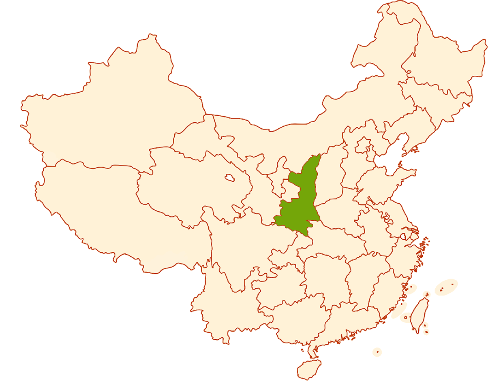

Shaanxi Cuisine
What is Shaanxi Cuisine?
Shaanxi cuisine makes elaborate use of ordinary ingredients and is characterized by its noodles, lamb/mutton dishes, and heavy use of strong and complex savory flavors such as salt, garlic, onion and vinegar. Sugar is rarely used. The main cooking methods are steaming, frying and stir-frying.
Due to its geographical location between the provinces of Shanxi and Sichuan, the flavors of Shaanxi cuisine include both sour and spicy of Szechuan flavors and the salty flavors of Shanxi. Shaanxi cuisine's primary flavor profile is "fragrant spicy" (香辣).

Shaanxi cuisine includes three regional styles:
Northern Shaanxi style is characterized by the wide use of steaming as the method of cooking. The most common meat is pork, although lamb and mutton are also popular. Beans and soups are also enjoyed by many.
Guanzhong style, which uses pork and lamb / mutton equally with heavy meaty flavors and tastes.
Hanzhong style, similar to Szechuan, is marked by spiciness.
 Qishan Saozi noodles
Qishan Saozi noodles